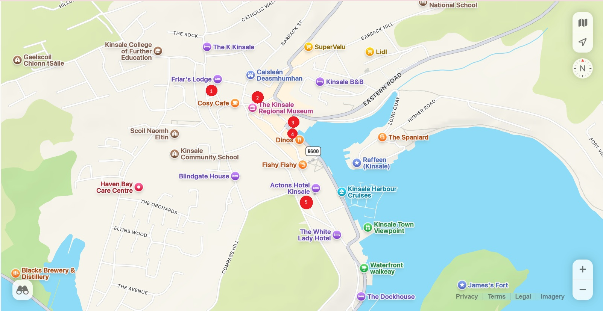

Insert text here about the home page...
Each bench is marked in the map below with a number in a red circle. To hear a story about each bench, match the number on the map to the number below and click the link to be taken to the recording.
